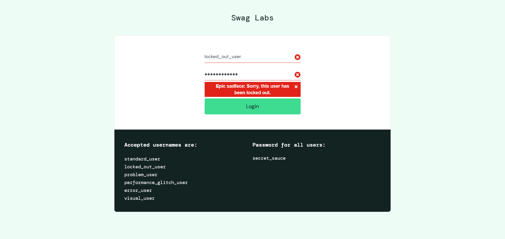

-
Login Feature
7:06:29 pm / 00:03:08:356 Fail
Login Feature
01.06.2024 7:06:29 pm 01.06.2024 7:09:38 pm 00:03:08:356 · #test-id=1Check Login FeatureFailCheck Login Feature ScenarioFailCheck Login Feature ScenarioThen Check that The login succesfully done or notThen Click on the Sandwitch menu and logout buttonThen Check the Logout is successfully happenedThen Enter the standard_user and secret_sauce and click on the Login buttonThen Check that Login successfully happened or notstepDefinations.Hooks.AfterScenario()FailCheck Login Feature ScenarioThen Check that The login succesfully done or notThen Click on the Sandwitch menu and logout buttonThen Check the Logout is successfully happenedThen Enter the locked_out_user and secret_sauce and click on the Login buttonThen Check that Login successfully happened or notstepDefinations.Hooks.AddScreenshot(io.cucumber.java.Scenario)imagestepDefinations.Hooks.AfterScenario()FailCheck Login Feature ScenarioThen Check that The login succesfully done or notThen Click on the Sandwitch menu and logout buttonThen Check the Logout is successfully happenedThen Enter the problem_user and secret_sauce and click on the Login buttonThen Check that Login successfully happened or notstepDefinations.Hooks.AfterScenario()FailCheck Login Feature ScenarioThen Check that The login succesfully done or notThen Click on the Sandwitch menu and logout buttonThen Check the Logout is successfully happenedThen Enter the performance_glitch_user and secret_sauce and click on the Login buttonThen Check that Login successfully happened or notstepDefinations.Hooks.AfterScenario()FailCheck Login Feature ScenarioThen Check that The login succesfully done or notThen Click on the Sandwitch menu and logout buttonThen Check the Logout is successfully happenedThen Enter the error_user and secret_sauce and click on the Login buttonThen Check that Login successfully happened or notstepDefinations.Hooks.AfterScenario()FailCheck Login Feature ScenarioThen Check that The login succesfully done or notThen Click on the Sandwitch menu and logout buttonThen Check the Logout is successfully happenedThen Enter the visual_user and secret_sauce and click on the Login buttonThen Check that Login successfully happened or notstepDefinations.Hooks.AfterScenario() -
Search and Select Product
7:09:38 pm / 00:00:34:485 Fail
Search and Select Product
01.06.2024 7:09:38 pm 01.06.2024 7:10:12 pm 00:00:34:485 · #test-id=75Check Search and Select ProductFailCheck Search and Select Product ScenarioFailCheck Search and Select Product ScenarioThen Select all the filterThen Click on the any productThen Click on the add to cart buttonThen Click on the cart buttonThen Click on the checkout buttonThen Enter the Aman , Kumar and 572831 and click on the continue buttonThen Click on the finish buttonThen Click on the Back Home buttonstepDefinations.Hooks.AfterScenario()
-
org.openqa.selenium.NoSuchSessionException
7 tests
org.openqa.selenium.NoSuchSessionException
7 failedStatus Timestamp TestName Fail 19:07:50 pm stepDefinations.Hooks.AfterScenario() Login Feature.Check Login Feature Scenario.stepDefinations.Hooks.AfterScenario()Fail 19:08:15 pm stepDefinations.Hooks.AfterScenario() Login Feature.Check Login Feature Scenario.stepDefinations.Hooks.AfterScenario()Fail 19:08:34 pm stepDefinations.Hooks.AfterScenario() Login Feature.Check Login Feature Scenario.stepDefinations.Hooks.AfterScenario()Fail 19:08:58 pm stepDefinations.Hooks.AfterScenario() Login Feature.Check Login Feature Scenario.stepDefinations.Hooks.AfterScenario()Fail 19:09:17 pm stepDefinations.Hooks.AfterScenario() Login Feature.Check Login Feature Scenario.stepDefinations.Hooks.AfterScenario()Fail 19:09:37 pm stepDefinations.Hooks.AfterScenario() Login Feature.Check Login Feature Scenario.stepDefinations.Hooks.AfterScenario()Fail 19:10:11 pm stepDefinations.Hooks.AfterScenario() Search and Select Product.Check Search and Select Product Scenario.stepDefinations.Hooks.AfterScenario() -
org.openqa.selenium.NoSuchElementException
1 tests
org.openqa.selenium.NoSuchElementException
1 failedStatus Timestamp TestName Fail 19:08:07 pm Then Check that Login successfully happened or not Login Feature.Check Login Feature Scenario.Then Check that Login successfully happened or not
-
@SelectProductScenario
1 tests
@SelectProductScenario
1 failedStatus Timestamp TestName Fail 19:09:38 pm Check Search and Select Product Scenario Search and Select Product.Check Search and Select Product Scenario -
@LoginScenario
6 tests
@LoginScenario
6 failedStatus Timestamp TestName Fail 19:06:29 pm Check Login Feature Scenario Login Feature.Check Login Feature ScenarioFail 19:07:51 pm Check Login Feature Scenario Login Feature.Check Login Feature ScenarioFail 19:08:16 pm Check Login Feature Scenario Login Feature.Check Login Feature ScenarioFail 19:08:35 pm Check Login Feature Scenario Login Feature.Check Login Feature ScenarioFail 19:08:59 pm Check Login Feature Scenario Login Feature.Check Login Feature ScenarioFail 19:09:18 pm Check Login Feature Scenario Login Feature.Check Login Feature Scenario
Started
Jan 6, 2024 07:06:29 pm
Ended
Jan 6, 2024 07:10:12 pm
Features Passed
0
Features Failed
2
Features
Scenarios
Steps
Timeline
Tags
| Name | Passed | Failed | Skipped | Others | Passed % |
|---|---|---|---|---|---|
| @SelectProductScenario | 0 | 1 | 0 | 0 | 0% |
| @LoginScenario | 0 | 6 | 0 | 0 | 0% |